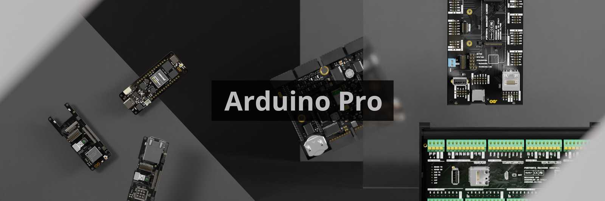
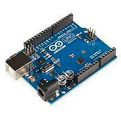
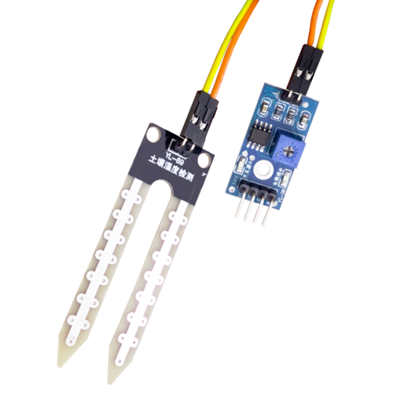
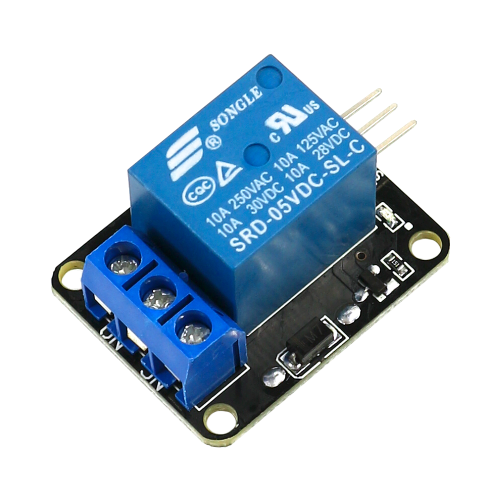
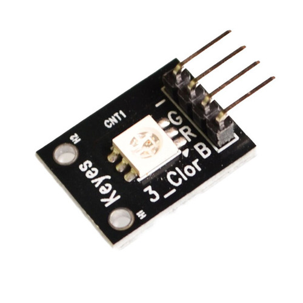
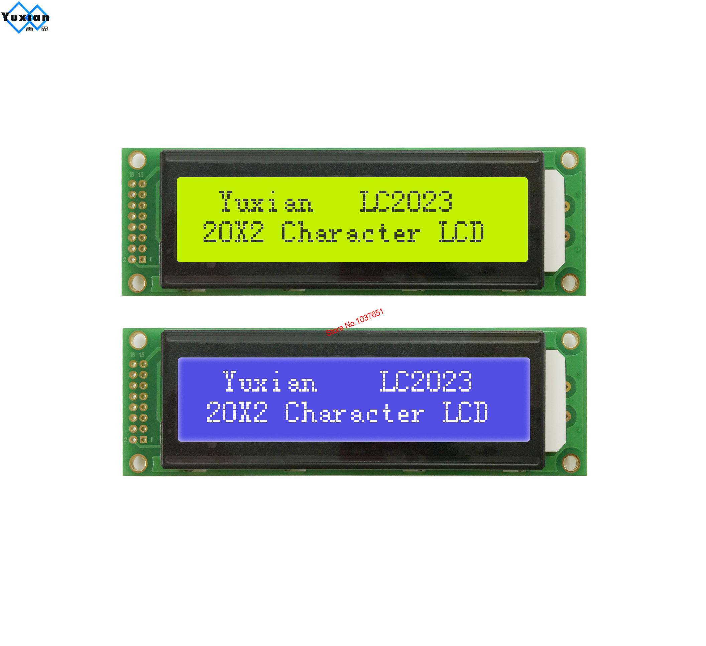
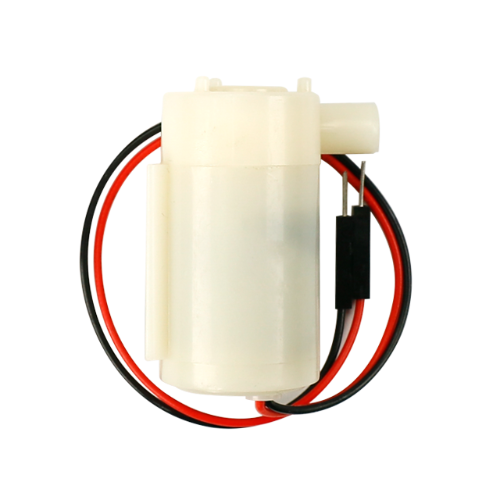
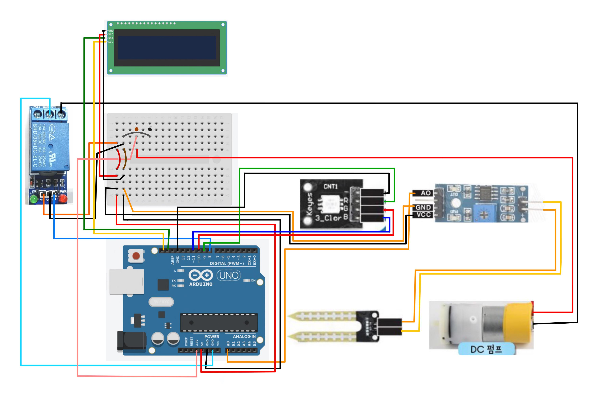

Arduino
변경, 해체, 계획의 설계.
구동흐름 및 회로도*

구동흐름*
-

-

토양 수분감지 센서
토양 수분감지 센서 전원
토양 수분감지 센서가 회로를 통해 켜진다.
-

9V 배터리, 릴레이, 워터 펌프
전기의 흐름
9V와 릴레이 모듈로 워터 펌프를 작동시킨다.
-

RGB LED
rgb(255,35,60);
RGB LED가 아두이노를 통해 켜진다 수분이 부족하면 조명이 켜지고 식물을 비춘다.
-

LCD
화면 출력
토양 수분감지 센서가 수분이 부족하면 수분을 감지하여 LCD 모니터에 현재 습도를 보이게한다.
-

워터 펌프 모터
물의 흐름
워터 펌프가 호스에 연결된 물을 알 맞은 습도까지 도달하도록 물을 지급한다.
회로도*

회로 구성 과정
- ✓ 아두이노에 lcd 모니터를 연결한다.
- ✓ 릴레이 모듈을 작은 브레드보드에 연결한다.
- ✓ RGB LED 모듈을 아두이노와 브레드보드에 연결한다.
- ✓ 수분감지 센서를 습도 모듈에 연결한다.
- ✓ 워터 펌프 모터를 각각 브레드보드와 릴레이 모듈에 연결한다.
- ✓ 전해 커패시터를 작은 브래드보드에 + -에 맞게 연결한다.
- ✓ 워터 펌프 모터 & 9V 배터리를 연결한다.
- ✓ 아두이노를 컴파일 하고 업로드 한다.